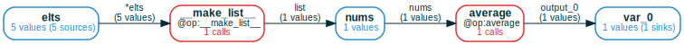

Natively handling Python collections

A key benefit of mandala over straightforward memoization is that it can make
Python collections (lists, dicts, ...) a native & transparent part of the
memoization process:
@ops can return collections where each item is a separateRef, so that later@opcalls can work with individual elements;@ops can also accept as input collections where each item is a separateRef, to e.g. implement aggregation operations over them.- collections can reuse the storage of their items: if two collections share some elements, each shared element is stored only once in storage.
- the relationship between a collection and each of its items is a native part
of the computational graph of
@opcalls, and can be propagated automatically byComputationFrames. Indeed, collections are implemented as@ops internally.
Input/output collections must be explicitly annotated
By default, any collection passed as @op input or output will be stored as a
single Ref with no structure; the object is opaque to the Storage
instance. To make the collection transparent to the Storage, you must
override this behavior explicitly by using a custom type annotation, such as
MList for lists, MDict for dicts, ...:
# for Google Colab
try:
import google.colab
!pip install git+https://github.com/amakelov/mandala
except:
pass
from mandala.imports import Storage, op, MList
storage = Storage()
@op
def average(nums: MList[float]) -> float:
return sum(nums) / len(nums)
with storage:
a = average([1, 2, 3, 4, 5])
We can understand how the list was made transparent to the storage by inspecting the computation frame:

We see that the internal __make_list__ operation was automatically applied to
create a list, which is then the Ref passed to average.
How collections interact with ComputationFrames
In general, CFs are turned into dataframes that capture the joint history of the
final Refs in the CF. When there are collection @ops in the CF, a single
Ref (such as the element of nums above) can depend on multiple Refs in
another variable (such as the Refs in the elts variable).
We can observe this by taking the dataframe of the above CF:
| | elts | __make_list__ | nums | average | var_0 |
|---:|:---------------------------------|:--------------------------------|:----------------|:--------------------------|--------:|
| 0 | ValueCollection([2, 4, 1, 3, 5]) | Call(__make_list__, hid=172...) | [1, 2, 3, 4, 5] | Call(average, hid=38e...) | 3 |
There's only a single row, but in the elts column we see a ValueCollection
object, indicating that there are multiple Refs in elts that are
dependencies of output_0.